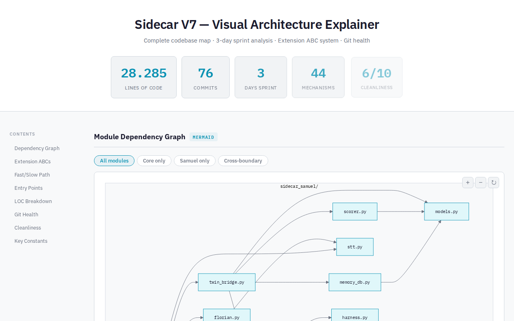
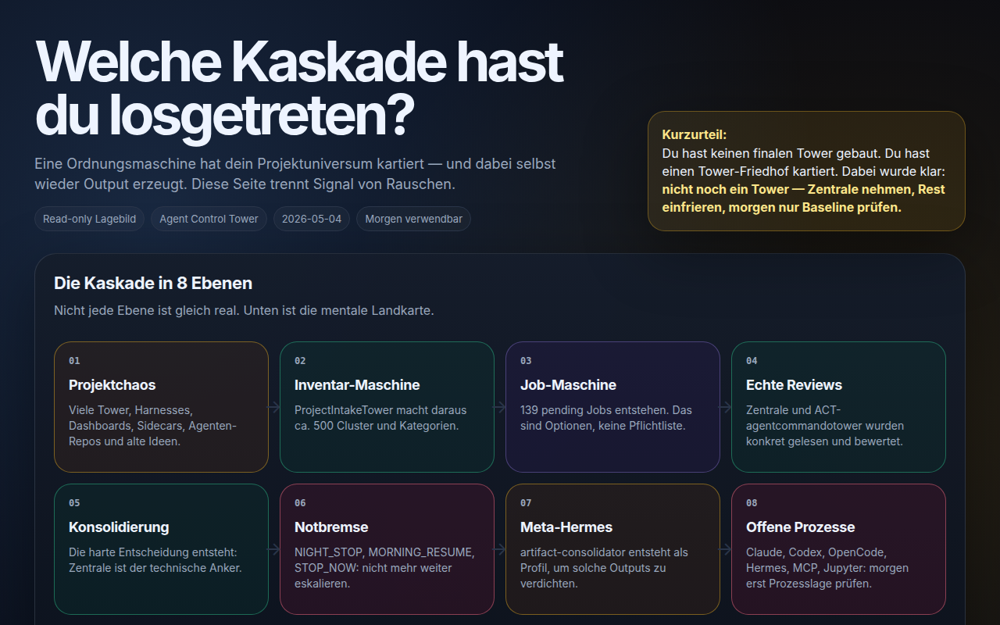
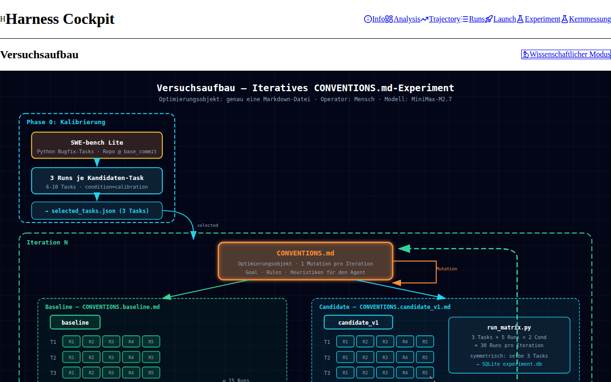
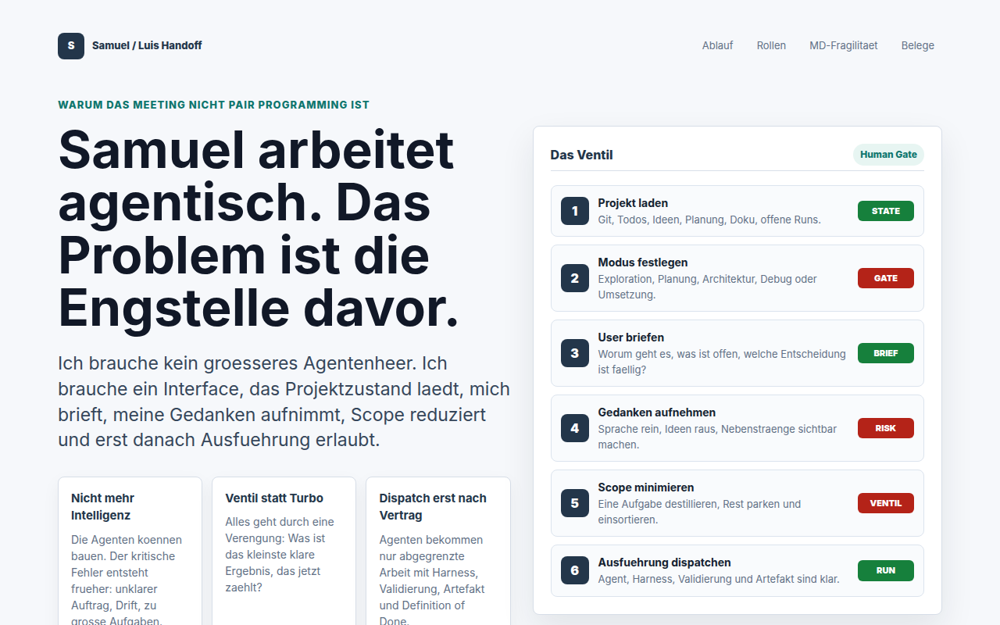
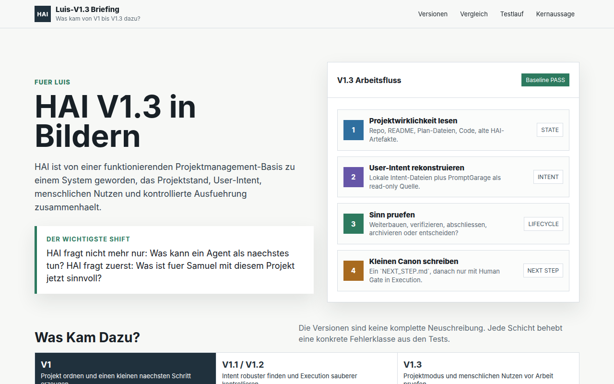

About Samuel Fleig
I build Human Agent Interfaces because I needed them myself.
HAI did not start as branding. It came from real work inside agentic systems: terminal agents, coding agents, harnesses, control layers, and the overload that appears when AI creates more output than a human can safely own.
I am Samuel Fleig, an AI Engineering student and AI engineer working on agentic systems, harnesses, and human-owned AI workflows. My private Samuel.SYSTEM surface says the same thing in another language: the work is not just coding. It is operating, comparing, routing, evaluating, and making agentic work observable.
SelfAI / early harness work
SelfAI was an early version of the same idea.
Before studying AI Engineering, I completed five semesters of Applied Computer Science. In the course Architecture of Neural Networks 2, I built SelfAI - my own experimental AI harness - and received a 1.0 for the project. SelfAI was not just a chatbot exercise. It was an early attempt to treat AI as a steerable, inspectable work and thinking tool.
Systems operated
The private Samuel.SYSTEM page names the real operating model.
I do not frame my strongest work as classical software engineering. The stronger claim is agentic operation: using, coordinating, evaluating, and improving AI-coding systems until the work becomes observable, bounded, and useful for a human decision.
Claude Code, Codex, OpenCode, Gemini.
Daily work inside code agents, CLI workflows, project state, patches, verification, and handoffs.
Hermes, OpenClaude, custom profiles.
Agent behavior shaped through profiles, skills, modes, memory, review gates, and role separation.
Paperclip, PortfolioTimeline, proof strips.
Work logs, screenshots, eval notes, and decisions converted into public-safe evidence instead of raw private chaos.
SelfAI, AgentArena, Sidecar.
AI output treated as something to route, inspect, compare, and falsify, not just something to accept.
Origin of HAI
More AI did not automatically create more clarity.
Across agent systems, coding agents, multi-agent workflows, control towers, harnesses, and automation setups, the same failure pattern appeared again and again: more threads, more decisions, more outputs, more drift, and more cognitive load. HAI is my answer to that problem.
AI should not just answer.
It should be steerable, inspectable, and useful as a work tool without hiding what it is doing.
Threads multiplied.
Agent work created artifacts, ideas, and partial decisions faster than the human could safely absorb.
Dashboards were not enough.
More visibility did not automatically answer who owns scope, risk, proof, and the next responsible action.
A control layer.
HAI became the layer between human intention and agentic execution: bounded, verifiable, and human-owned.
What exists already
The trust claim is concrete, but narrow.
Early harness, not chatbot.
The academic project already treated AI as something to structure, route, and inspect.
Work made observable.
The private website frames agentic work as operation: observe, compare, route, evaluate, and publish proof.
The agent watches the work.
Sidecar explores a second system that notices overload, drift, and loss of alignment in the human-agent loop. See the control layer.
The human stays owner.
HAI turns messy intent into bounded agent work with scope, evidence, stop rules, and a next decision.
Artifact trail
A local work trail, compressed into public-safe evidence.
These artifacts are secondary proof, not a claim of external customer validation. They show repeated contact with the same problem shape: agent output has to become visible, bounded, and checkable before it can be trusted.

Timeline evidence
Agentic work made visible.
The local timeline compresses apps, diagrams, analyses, and explainers without turning private logs into an overclaim.

Sidecar
Overload as a system problem.
Sidecar explored how a second agent layer can watch the collaboration itself instead of only doing more tasks. Open the Sidecar proof.

Control tower learning
Scope explosion made visible.
The control-tower line became evidence for why HAI must protect the human from agent cascades, not celebrate them.

Evaluation
Agent output needs proof.
Harness work turns behavior into traces, comparisons, and verdicts that can be inspected instead of guessed.

Luis handoff
Agentic work made legible.
The collaboration with Luis forced the work into human-readable maps, roles, bottlenecks, and concrete next steps.

HAI iteration
From project state to next step.
HAI matured into a filter for intent, human payoff, project state, and controlled execution.
Full PortfolioTimeline public mirror: later hosting step.
For the buyer-facing control proof, see the Proof page.
What this means for a client
Show me one agent workflow that currently creates confusion.
The useful entry point is one real workflow: where context gets lost, where agents overproduce, where decisions stop being owned, or where the next step never becomes safe enough to run.